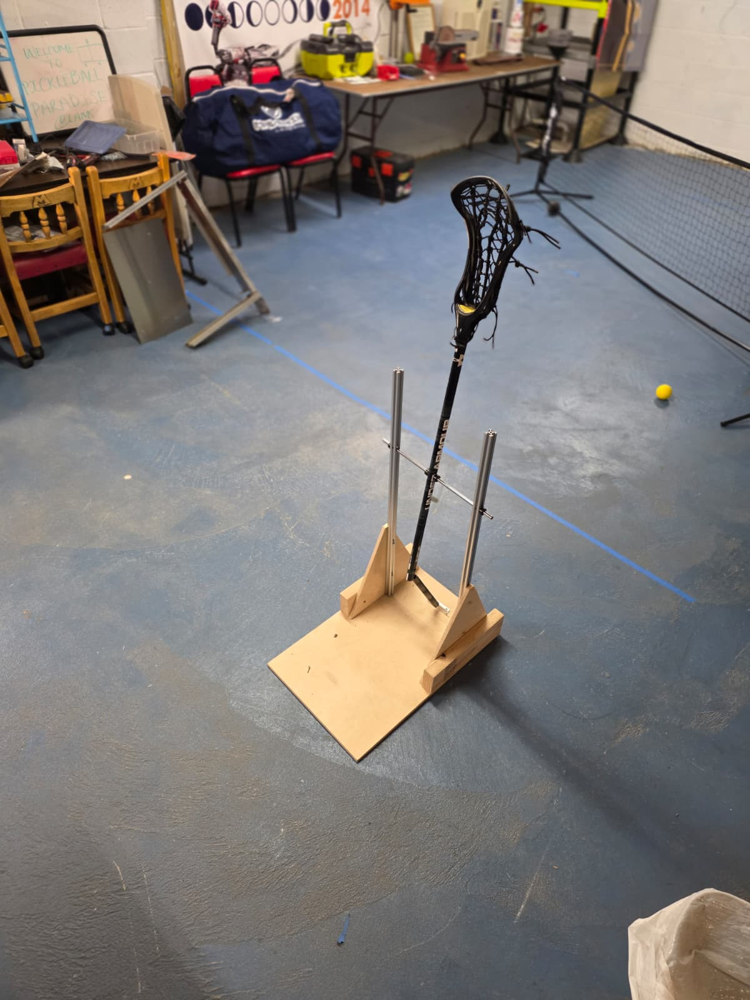
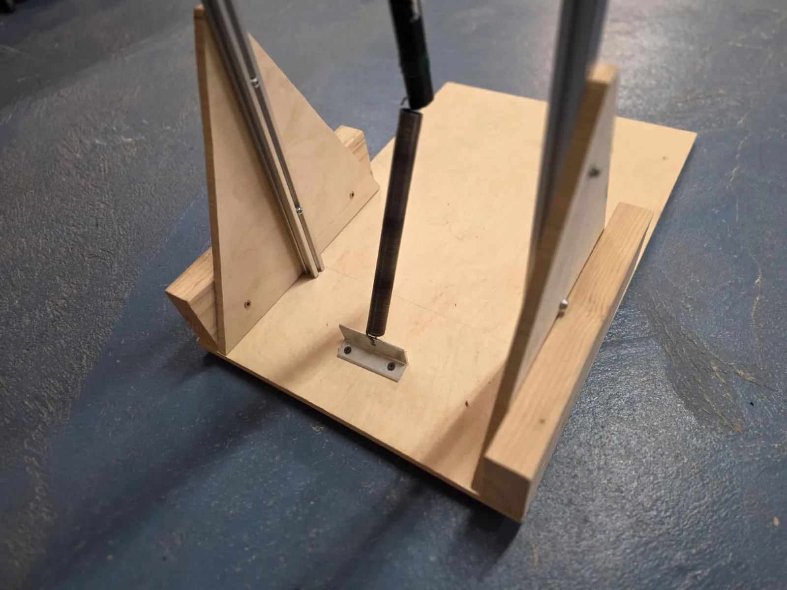
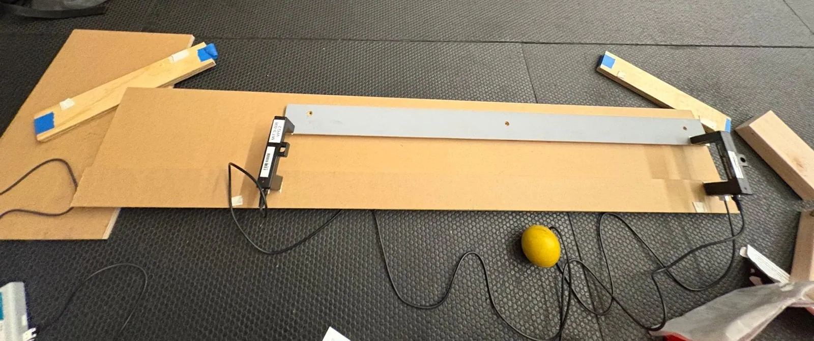
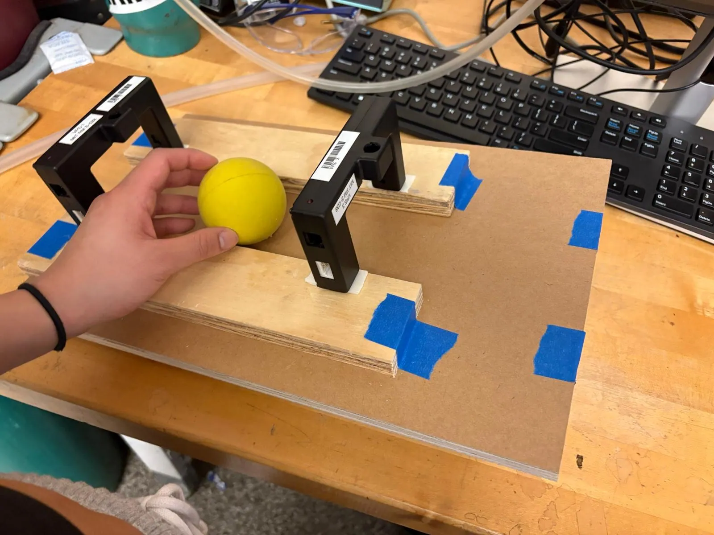
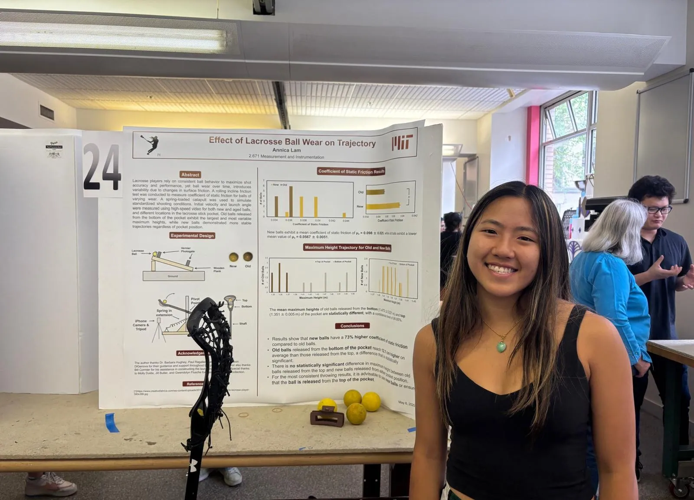
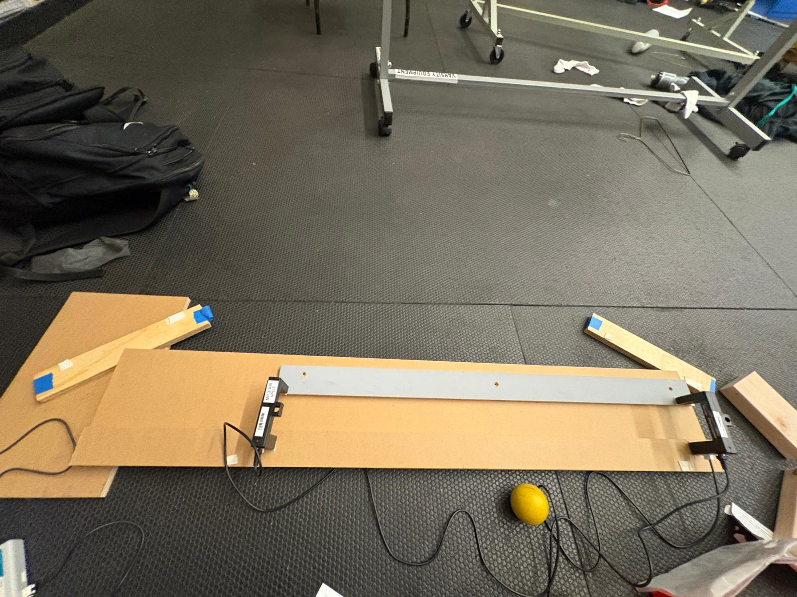
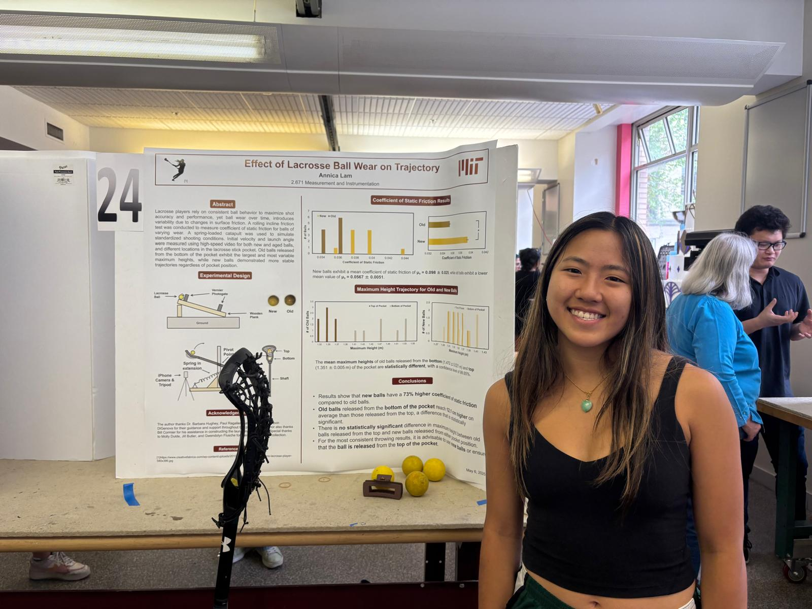

Lacrosse Ball Wear & Shot Trajectory.
How does the condition of a lacrosse ball—and where it sits in the stick pocket—change the consistency of a shot? I designed controlled experiments to measure friction and shot trajectory.





Testing a familiar sports problem
In lacrosse, worn “greaser” balls can feel different from new balls, but the effect on shot behavior is difficult to isolate during play. I investigated how ball wear and pocket placement influence repeatability using controlled bench-top experiments.
Building repeatable tests
I built a wooden incline and used two Vernier photogates to compare how new and worn balls rolled. To study shots, I designed a spring-loaded catapult that released a lacrosse stick under repeatable conditions. I tested 19 balls with five trials per ball for each pocket position, recording launches with 1,000 fps high-speed video.


Turning video into measurements
From the recorded trajectories, I analyzed initial velocity, launch angle, and maximum ball height, then compared the distributions across ball condition and top- versus bottom-pocket placement.
Wear changed consistency
Worn balls exhibited lower measured friction in the incline tests. Pocket placement had little effect on maximum height for new balls, but worn balls launched from the bottom pocket reached approximately 12.1 cm higher than from the top and showed greater variability. The findings suggest that equipment wear and ball placement can affect repeatability even when initial launch velocity changes are not significant.